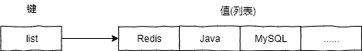
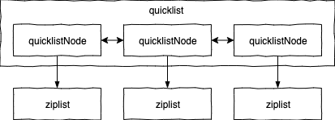
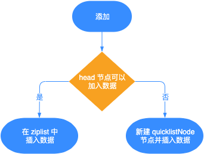

- 01 Redis 是如何执行的.md.html
- 02 Redis 快速搭建与使用.md.html
- 03 Redis 持久化——RDB.md.html
- 04 Redis 持久化——AOF.md.html
- 05 Redis 持久化——混合持久化.md.html
- 06 字符串使用与内部实现原理.md.html
- 07 附录：更多字符串操作命令.md.html
- 08 字典使用与内部实现原理.md.html
- 09 附录：更多字典操作命令.md.html
- 10 列表使用与内部实现原理.md.html
- 11 附录：更多列表操作命令.md.html
- 12 集合使用与内部实现原理.md.html
- 13 附录：更多集合操作命令.md.html
- 14 有序集合使用与内部实现原理.md.html
- 15 附录：更多有序集合操作命令.md.html
- 16 Redis 事务深入解析.md.html
- 17 Redis 键值过期操作.md.html
- 18 Redis 过期策略与源码分析.md.html
- 19 Redis 管道技术——Pipeline.md.html
- 20 查询附近的人——GEO.md.html
- 21 游标迭代器（过滤器）——Scan.md.html
- 22 优秀的基数统计算法——HyperLogLog.md.html
- 23 内存淘汰机制与算法.md.html
- 24 消息队列——发布订阅模式.md.html
- 25 消息队列的其他实现方式.md.html
- 26 消息队列终极解决方案——Stream（上）.md.html
- 27 消息队列终极解决方案——Stream（下）.md.html
- 28 实战：分布式锁详解与代码.md.html
- 29 实战：布隆过滤器安装与使用及原理分析.md.html
- 30 完整案例：实现延迟队列的两种方法.md.html
- 31 实战：定时任务案例.md.html
- 32 实战：RediSearch 高性能的全文搜索引擎.md.html
- 33 实战：Redis 性能测试.md.html
- 34 实战：Redis 慢查询.md.html
- 35 实战：Redis 性能优化方案.md.html
- 36 实战：Redis 主从同步.md.html
- 37 实战：Redis哨兵模式（上）.md.html
- 38 实战：Redis 哨兵模式（下）.md.html
- 39 实战：Redis 集群模式（上）.md.html
- 40 实战：Redis 集群模式（下）.md.html
- 41 案例：Redis 问题汇总和相关解决方案.md.html
- 42 技能学习指南.md.html
- 43 加餐：Redis 的可视化管理工具.md.html
10 列表使用与内部实现原理
列表类型 (List) 是一个使用链表结构存储的有序结构，它的元素插入会按照先后顺序存储到链表结构中，因此它的元素操作 (插入\删除) 时间复杂度为 O(1)，所以相对来说速度还是比较快的，但它的查询时间复杂度为 O(n)，因此查询可能会比较慢。
1 基础使用
列表类型的使用相对来说比较简单，对它的操作就相当操作一个没有任何 key 值的 value 集合，如下图所示： 
1）给列表添加一个或多个元素
语法：lpush key value [value …] 示例：
127.0.0.1:6379> lpush list 1 2 3
(integer) 3
2）给列表尾部添加一个或多个元素
语法：rpush key value [value …] 示例：
127.0.0.1:6379> rpush list2 1 2 3
(integer) 3
3）返回列表指定区间内的元素
语法：lrange key start stop 示例：
127.0.0.1:6379> lrange list 0 -1
"3"
"2"
"1"
127.0.0.1:6379> lrange list2 0 -1
"1"
"2"
"3"
其中 -1 代表列表中的最后一个元素。
4）获取并删除列表的第一个元素
语法：lpop key 示例：
127.0.0.1:6379> lrange list 0 -1
1) "d"
2) "c"
3) "b"
4) "a"
127.0.0.1:6379> lpop list
"d"
127.0.0.1:6379> lrange list 0 -1
1) "c"
2) "b"
3) "a"
5）获取并删除列表的最后一个元素
语法：rpop key 示例：
127.0.0.1:6379> lrange list 0 -1
1) "c"
2) "b"
3) "a"
127.0.0.1:6379> rpop list
"a"
127.0.0.1:6379> lrange list 0 -1
1) "c"
2) "b"
6）根据下标获取对应的元素
语法：lindex key index 示例：
127.0.0.1:6379> rpush list3 a b c
(integer) 3
127.0.0.1:6379> lindex list3 0
"a"
更多操作命令，详见附录部分。
2 代码实战
下面来看列表类型在 Java 中的使用，同样先添加 Jedis 框架，使用代码如下：
public class ListExample {
public static void main(String[] args) {
Jedis jedis = new Jedis("127.0.0.1", 6379);
// 声明 Redis key
final String REDISKEY = "list";
// 在头部插入一个或多个元素
Long lpushResult = jedis.lpush(REDISKEY, "Java", "Sql");
System.out.println(lpushResult); // 输出：2
// 获取第 0 个元素的值
String idValue = jedis.lindex(REDISKEY, 0);
System.out.println(idValue); // 输出：Sql
// 查询指定区间的元素
List<String> list = jedis.lrange(REDISKEY, 0, -1);
System.out.println(list); // 输出：[Sql, Java]
// 在元素 Java 前面添加 MySQL 元素
jedis.linsert(REDISKEY, ListPosition.BEFORE, "Java", "MySQL");
System.out.println(jedis.lrange(REDISKEY, 0, -1)); // 输出：[Sql, MySQL, Java]
jedis.close();
}
}
程序运行结果如下：
2 Sql [Sql, Java] [Sql, MySQL, Java]
3 内部实现
我们先用 debug encoding key 来查看列表类型的内部存储类型，如下所示：
127.0.0.1:6379> object encoding list
"quicklist"
从结果可以看出，列表类型的底层数据类型是 quicklist。
quicklist (快速列表) 是 Redis 3.2 引入的数据类型，早期的列表类型使用的是ziplist (压缩列表) 和双向链表组成的，Redis 3.2 改为用 quicklist 来存储列表元素。
我们来看下 quicklist 的实现源码：
typedef struct quicklist { // src/quicklist.h
quicklistNode *head;
quicklistNode *tail;
unsigned long count; /* ziplist 的个数 */
unsigned long len; /* quicklist 的节点数 */
unsigned int compress : 16; /* LZF 压缩算法深度 */
//...
} quicklist;
typedef struct quicklistNode {
struct quicklistNode *prev;
struct quicklistNode *next;
unsigned char *zl; /* 对应的 ziplist */
unsigned int sz; /* ziplist 字节数 */
unsigned int count : 16; /* ziplist 个数 */
unsigned int encoding : 2; /* RAW==1 or LZF==2 */
unsigned int container : 2; /* NONE==1 or ZIPLIST==2 */
unsigned int recompress : 1; /* 该节点先前是否被压缩 */
unsigned int attempted_compress : 1; /* 节点太小无法压缩 */
//...
} quicklistNode;
typedef struct quicklistLZF {
unsigned int sz;
char compressed[];
} quicklistLZF;
从以上源码可以看出 quicklist 是一个双向链表，链表中的每个节点实际上是一个 ziplist，它们的结构如下图所示： 
ziplist 作为 quicklist 的实际存储结构，它本质是一个字节数组，ziplist 数据结构如下图所示：
其中的字段含义如下：
- zlbytes：压缩列表字节长度，占 4 字节；
- zltail：压缩列表尾元素相对于起始元素地址的偏移量，占 4 字节；
- zllen：压缩列表的元素个数；
- entryX：压缩列表存储的所有元素，可以是字节数组或者是整数；
- zlend：压缩列表的结尾，占 1 字节。
4 源码解析
下面我们来看一下更多关于列表类型的源码实现。
1）添加功能源码分析
quicklist 添加操作对应函数是 quicklistPush，源码如下：
void quicklistPush(quicklist *quicklist, void *value, const size_t sz,
int where) {
if (where == QUICKLIST_HEAD) {
// 在列表头部添加元素
quicklistPushHead(quicklist, value, sz);
} else if (where == QUICKLIST_TAIL) {
// 在列表尾部添加元素
quicklistPushTail(quicklist, value, sz);
}
}
以 quicklistPushHead 为例，源码如下：
int quicklistPushHead(quicklist *quicklist, void *value, size_t sz) {
quicklistNode *orig_head = quicklist->head;
if (likely(
_quicklistNodeAllowInsert(quicklist->head, quicklist->fill, sz))) {
// 在头部节点插入元素
quicklist->head->zl =
ziplistPush(quicklist->head->zl, value, sz, ZIPLIST_HEAD);
quicklistNodeUpdateSz(quicklist->head);
} else {
// 头部节点不能继续插入，需要新建 quicklistNode、ziplist 进行插入
quicklistNode *node = quicklistCreateNode();
node->zl = ziplistPush(ziplistNew(), value, sz, ZIPLIST_HEAD);
quicklistNodeUpdateSz(node);
// 将新建的 quicklistNode 插入到 quicklist 结构中
_quicklistInsertNodeBefore(quicklist, quicklist->head, node);
}
quicklist->count++;
quicklist->head->count++;
return (orig_head != quicklist->head);
}
quicklistPushHead 函数的执行流程，先判断 quicklist 的 head 节点是否可以插入数据，如果可以插入则使用 ziplist 的接口进行插入，否则就新建 quicklistNode 节点进行插入。
函数的入参是待插入的 quicklist，还有需要插入的值 value 以及他的大小 sz。
函数的返回值为 int，0 表示没有新建 head，1 表示新建了 head。 quicklistPushHead 执行流程，如下图所示：

2）删除功能源码分析
quicklist 元素删除分为两种情况：单一元素删除和区间元素删除，它们都位于 src/quicklist.c 文件中。
① 单一元素删除
单一元素的删除函数是 quicklistDelEntry，源码如下：
void quicklistDelEntry(quicklistIter *iter, quicklistEntry *entry) {
quicklistNode *prev = entry->node->prev;
quicklistNode *next = entry->node->next;
// 删除指定位置的元素
int deleted_node = quicklistDelIndex((quicklist *)entry->quicklist,
entry->node, &entry->zi);
//...
}
可以看出 quicklistDelEntry 函数的底层，依赖 quicklistDelIndex 函数进行元素删除。
② 区间元素删除
区间元素删除的函数是 quicklistDelRange，源码如下：
// start 表示开始删除的下标，count 表示要删除的个数
int quicklistDelRange(quicklist *quicklist, const long start,
const long count) {
if (count <= 0)
return 0;
unsigned long extent = count;
if (start >= 0 && extent > (quicklist->count - start)) {
// 删除的元素个数大于已有元素
extent = quicklist->count - start;
} else if (start < 0 && extent > (unsigned long)(-start)) {
// 删除指定的元素个数
extent = -start; /* c.f. LREM -29 29; just delete until end. */
}
//...
// extent 为剩余需要删除的元素个数，
while (extent) {
// 保存下个 quicklistNode，因为本节点可能会被删除
quicklistNode *next = node->next;
unsigned long del;
int delete_entire_node = 0;
if (entry.offset == 0 && extent >= node->count) {
// 删除整个 quicklistNode
delete_entire_node = 1;
del = node->count;
} else if (entry.offset >= 0 && extent >= node->count) {
// 删除本节点的所有元素
del = node->count - entry.offset;
} else if (entry.offset < 0) {
// entry.offset<0 表示从后向前，相反则表示从前向后剩余的元素个数
del = -entry.offset;
if (del > extent)
del = extent;
} else {
// 删除本节点部分元素
del = extent;
}
D("[%ld]: asking to del: %ld because offset: %d; (ENTIRE NODE: %d), "
"node count: %u",
extent, del, entry.offset, delete_entire_node, node->count);
if (delete_entire_node) {
__quicklistDelNode(quicklist, node);
} else {
quicklistDecompressNodeForUse(node);
node->zl = ziplistDeleteRange(node->zl, entry.offset, del);
quicklistNodeUpdateSz(node);
node->count -= del;
quicklist->count -= del;
quicklistDeleteIfEmpty(quicklist, node);
if (node)
quicklistRecompressOnly(quicklist, node);
}
// 剩余待删除元素的个数
extent -= del;
// 下个 quicklistNode
node = next;
// 从下个 quicklistNode 起始位置开始删除
entry.offset = 0;
}
return 1;
}
从上面代码可以看出，quicklist 在区间删除时，会先找到 start 所在的 quicklistNode，计算删除的元素是否小于要删除的 count，如果不满足删除的个数，则会移动至下一个 quicklistNode 继续删除，依次循环直到删除完成为止。
quicklistDelRange 函数的返回值为 int 类型，当返回 1 时表示成功的删除了指定区间的元素，返回 0 时表示没有删除任何元素。
3）更多源码
除了上面介绍的几个常用函数之外，还有一些更多的函数，例如：
- quicklistCreate：创建 quicklist；
- quicklistInsertAfter：在某个元素的后面添加数据；
- quicklistInsertBefore：在某个元素的前面添加数据；
- quicklistPop：取出并删除列表的第一个或最后一个元素；
- quicklistReplaceAtIndex：替换某个元素。
5 使用场景
列表的典型使用场景有以下两个：
- 消息队列：列表类型可以使用 rpush 实现先进先出的功能，同时又可以使用 lpop 轻松的弹出（查询并删除）第一个元素，所以列表类型可以用来实现消息队列；
- 文章列表：对于博客站点来说，当用户和文章都越来越多时，为了加快程序的响应速度，我们可以把用户自己的文章存入到 List 中，因为 List 是有序的结构，所以这样又可以完美的实现分页功能，从而加速了程序的响应速度。
6 小结
通过本文我们可以知道列表类型并不是简单的双向链表，而是采用了 quicklist 的数据结构对数据进行存取，quicklist 是 Redis 3.2 新增的数据类型，它的底层采取的是压缩列表加双向链表的存储结构，quicklist 为了存储更多的数据，会对每个 quicklistNode 节点进行压缩，这样就可以有效的存储更多的消息队列或者文章的数据了。